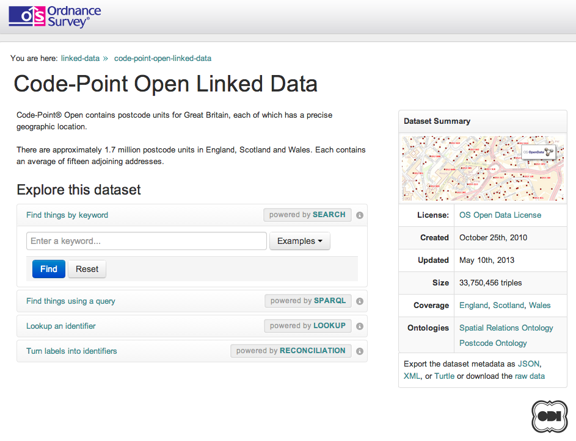

The Data Consumer's Checklist
Ulrich Atz · Open Data Institute
@statshero
Use arrows to navigate. Press 'f' for fullscreen. Press the Escape key to see all slides.
Overview of today:
- A use case example
- The general case
- If we have time: the Open Data Certificate
- Questions / you can suggest a topic

For the general case, you might want to consider
- Accessibility
- Ownership and licensing
- Form
- Quality
- Support
Accessibility (1/5)
- is the data already available? If so, where?
- how can you access it? dumps? API?
- in what format is the data published? CSV? JSON? PDF?!
Ownership and licensing (2/5)
- who publishes it?
- are they the originator of the data?
- under what licence is the data published?
- is it personal data?
Form (3/5)
- how has the data been processed?
- is it in raw or summary form?
- how will its form (e.g. granularity) affect your analysis/product/application?
- what syntactic and semantic transformations will you need to make?
- is this compatible with other data sets you have?
Quality (4/5)
- how current is the data?
- how regularly is it updated?
- do you understand all the fields and their context?
- for how long will it be published? what is the commitment by the publisher?
- what do you know about the accuracy of the data?
- how are missing data handled?
Support (5/5)
- how is the data set documented?
- is there a place you can report errors in the data?
- does the meta-data make sense?
- does the publisher offer support in any way?
The first robust quality badge for open data helps
- Publishers certify their data
- Users find and use it
- Policy makers benchmark
Quick, what are the three most important questions?
- How can you use the data?
- Is the quality sufficient and appropriate?
- Will the data be available in the future?
Questions?

Ulrich Atz · Open Data Institute